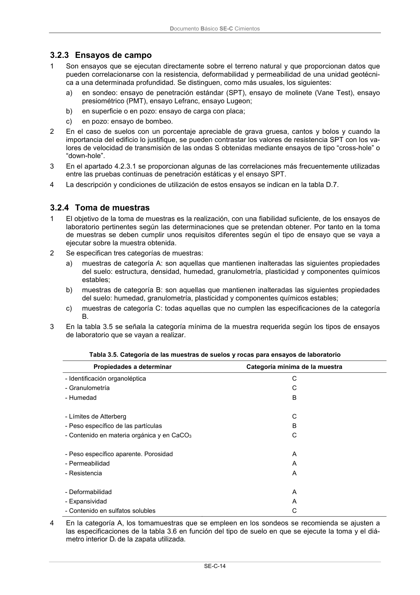

DB-SE-C Cimientos · edición 2019-12-20 · capa oficial
Documento DB-SE-C-oficial · SHA-256 del PDF a71133f4b0dca253e45ea3071c70f2a512354bcc5cd841bf89b1a502f567ac5e
Copia fiel del PDF fuente · Fuente oficial
Ficha de la disposición en la fuente oficial
Formatos: JSON del segmento · Markdown
3.2.4 Toma de muestras 1 El objetivo de la toma de muestras es la realización, con una fiabilidad suficiente, de los ensayos de laboratorio pertinentes según las determinaciones que se pretendan obtener. Por tanto en la toma de muestras se deben cumplir unos requisitos diferentes según el tipo de ensayo que se vaya a ejecutar sobre la muestra obtenida. 2 Se especifican tres categorías de muestras: a) muestras de categoría A: son aquellas que mantienen inalteradas las siguientes propiedades del suelo: estructura, densidad, humedad, granulometría, plasticidad y componentes químicos estables; b) muestras de categoría B: son aquellas que mantienen inalteradas las siguientes propiedades del suelo: humedad, granulometría, plasticidad y componentes químicos estables; c) muestras de categoría C: todas aquellas que no cumplen las especificaciones de la categoría B. 3 En la tabla 3.5 se señala la categoría mínima de la muestra requerida según los tipos de ensayos de laboratorio que se vayan a realizar. Tabla 3.5. Categoría de las muestras de suelos y rocas para ensayos de laboratorio Propiedades a determinar Categoría mínima de la muestra - Identificación organoléptica - Granulometría - Humedad - Límites de Atterberg - Peso específico de las partículas - Contenido en materia orgánica y en CaCO3 - Peso específico aparente. Porosidad - Permeabilidad - Resistencia - Deformabilidad - Expansividad - Contenido en sulfatos solubles C C B C B C A A A A A C 4 En la categoría A, los tomamuestras que se empleen en los sondeos se recomienda se ajusten a las especificaciones de la tabla 3.6 en función del tipo de suelo en que se ejecute la toma y el diá- metro interior Di de la zapata utilizada. Documento Básico SE-C Cimientos SE-C-15 Tabla 3.6. Especificaciones de la categoría A de tomamuestras Tipo de suelo Sistema de hincado Diámetro interior Di Despeje interior D Relación de Áreas Ra Espesor Zapata del tomamuestras E Angulo de zapata de corte Arcillas, Limos, Arenas finas Presión > 70 mm 1% 15 2 mm 5º Arenas medias Arenas gruesas Mezclas Presión Golpeo > 80 mm 3 % 15 5 mm 10º Con los valores de las siguientes expresiones: 100 D D D D i i e (3.1) 100 D D D R 2 i 2 i 2 e a (3.2) 2 D D E i e (3.3) siendo De el diámetro exterior de la zapata del tomamuestras Di el diámetro interior de la zapata del tomamuestras 5 En la tabla D.8 se especifican los diferentes tipos de tomamuestras, el método de hinca y la catego- ría adjudicada. 6 Además de las muestras de suelo o roca señaladas, el reconocimiento geotécnico debe incluir la toma de muestras de agua de los distintos acuíferos encontrados, en el fin de prever posibles pro- blemas de agresividad o contaminación. En algunos casos estas muestras servirán para una mejor definición de la hidrogeología de la zona de estudio. 7 Una vez extraídas las muestras se procederá a su parafinado o protección adecuada y se traslada- rán al laboratorio de ensayo en las mejores condiciones posibles.
